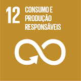

O Futuro do Planeta Começa nas Nossas Escolhas
A ODS 12 – Consumo e Produção Responsáveis faz parte dos Objetivos de Desenvolvimento Sustentável da ONU e busca incentivar hábitos de consumo conscientes e formas de produção mais sustentáveis. Seu objetivo é reduzir o desperdício, diminuir a geração de resíduos, economizar recursos naturais e promover um futuro melhor para todos. Afinal, pequenas atitudes no nosso dia a dia podem fazer uma grande diferença para o planeta!
Por que a ODS 12 é importante?
Ela é muito importante porque busca conscientizar as pessoas sobre a necessidade de consumir e produzir de maneira responsável, evitando o desperdício e os danos ao meio ambiente. Ajuda a reduzir a poluição, diminuir a quantidade de lixo, preservar os recursos naturais e incentivar a reciclagem e a reutilização de materiais.
Além disso, promove hábitos mais sustentáveis, como economizar água e energia, evitar o desperdício de alimentos e comprar apenas o necessário. Essas atitudes fazem diferença na proteção do planeta e na qualidade de vida de todos.
Os 5 Rs da Sustentabilidade
Os 5 Rs são atitudes que ajudam a diminuir a produção de lixo, economizar recursos naturais e preservar o meio ambiente.
1. REPENSAR
Refletir sobre nossos hábitos de consumo e evitar desperdícios.
2. RECUSAR
Não aceitar produtos que prejudicam o meio ambiente, como sacolas plásticas e embalagens desnecessárias.
3. REDUZIR
Consumir menos e evitar o desperdício de água, energia e materiais.
4. REUTILIZAR
Usar novamente objetos e materiais, dando a eles uma nova utilidade.
5. RECICLAR
Transformar materiais descartados, como papel, plástico, vidro e metal, em novos produtos.

Consequências do Consumo Exagerado
- Aumento do lixo: o descarte excessivo de produtos e embalagens prejudica o meio ambiente.
- Desmatamento: a exploração exagerada de recursos naturais provoca a destruição de florestas.
- Desperdício de água: a fabricação de produtos utiliza grandes quantidades de água.
- Poluição: o excesso de produção e descarte aumenta a poluição do ar, da água e do solo.
- Aquecimento global: a produção e o transporte de mercadorias geram gases que contribuem para as mudanças climáticas.
Principais Metas da ODS 12 até 2030

Atitudes para Ajudar o Planeta
- Reciclar: separar papel, plástico, vidro e metal.
- Economizar água: fechar a torneira ao escovar os dentes e evitar banhos demorados.
- Economizar energia: apagar as luzes e desligar aparelhos quando não estiverem em uso.
- Evitar sacolas plásticas: utilizar sacolas reutilizáveis nas compras.
- Evitar o desperdício de alimentos: comprar apenas o necessário.
- Preservar a natureza: cuidar das árvores, plantas, rios e animais.